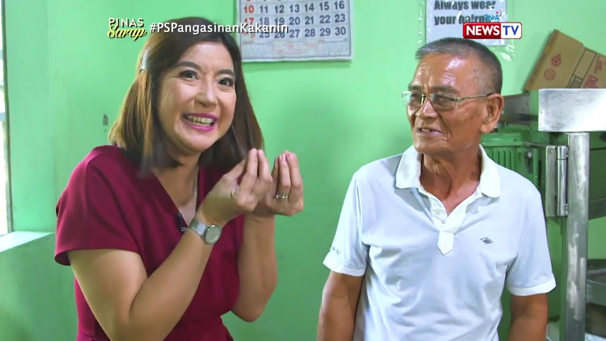
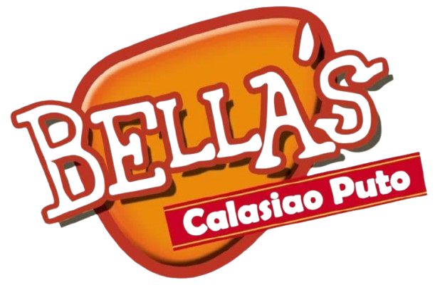
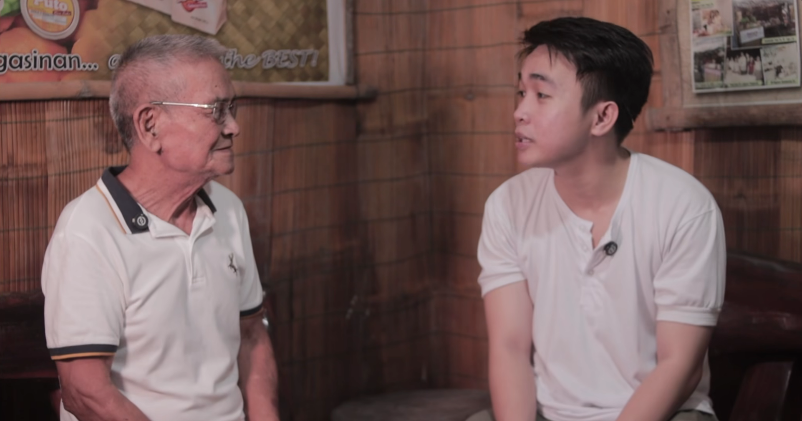
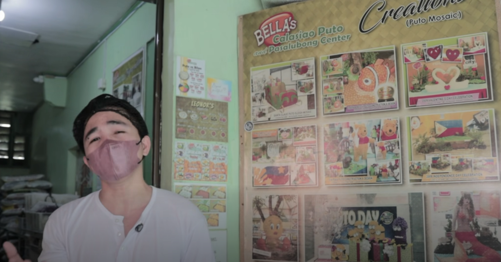
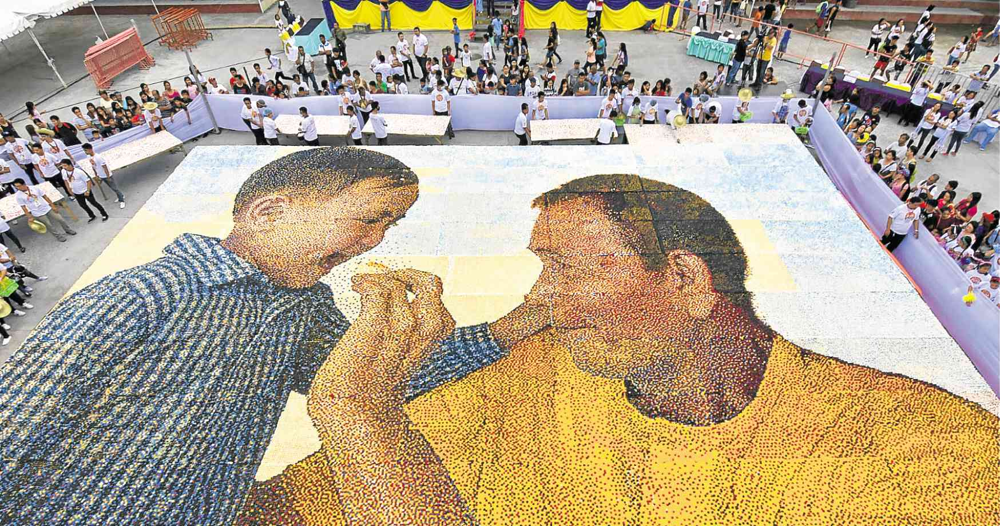
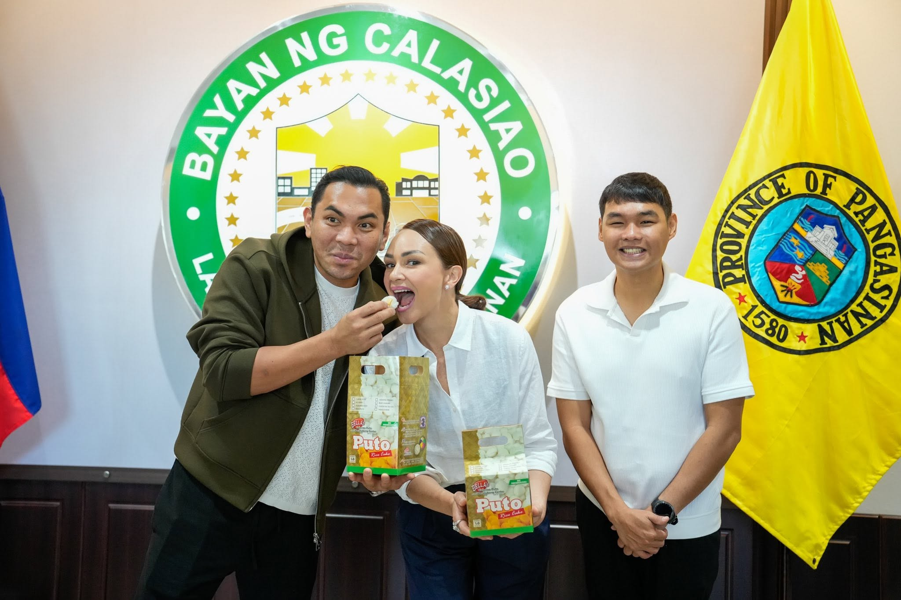
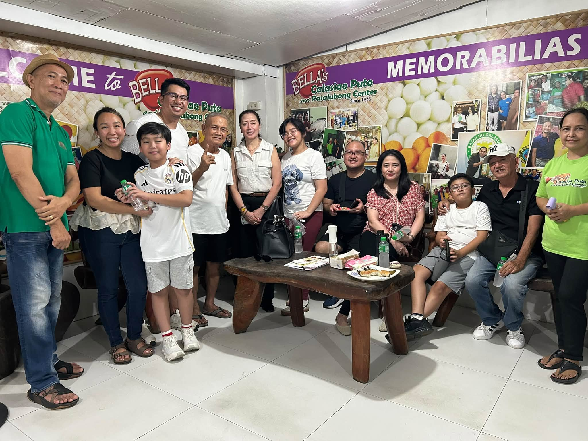
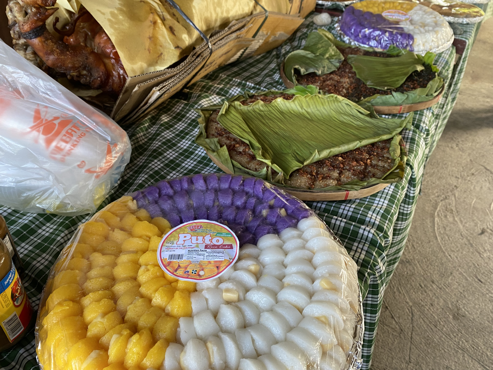

 Name Person
Name Person

Name Person
Ikatlo ang Pangasinan sa mga top producer ng kanin sa buong bansa. Sa video na ito, alamin kung paano ginagawa ang classic kakanin na Puto Calasiao, na hango sa giniling na bigas ang pagkakaluto! Join award-winning Filipino broadcast journalist Kara David as she explores the history of Filipino food on 'Pinas Sarap,' Thursday nights at 10:15 PM on GMA News TV. #PinasSarap #PSPangasinanKakanin

Sa pagsisimula ng Puto Festival 2025 sa Calasiao, Pangasinan, panoorin ang ‘Gintong Butil,’ dokumentaryo ni Akar. #GintongButil

During the Puto Festival, Bella's Calasiao Puto used to compete with their stunning family-made mosaic projects (left). Their art pieces can be seen on a banner proudly posted to the entrance of their factory.
During the festival in 2017, Pangasinan has landed in the Guinness World Records (GWR) for assembling the largest “puto” (rice cake) mosaic last year (right). 85 volunteers worked in three shifts to put together 320,000 pieces of puto to create a mosaic depicting an image of a man feeding his grandson with the rice cake.
The puto were bought from 30 local makers, including Bella's Calasiao Puto, as the Calasiao government’s way of giving back to a homegrown industry that had made this town famous.
Check out the article by Inquirer.net



Kabat yo ni? Siyempre! Kaway mga batang 90s! Bisita po natin ngayon ang Celebrity at Professional Chef na si Ms. Donita Rose na mula sa Bayan ng Malasiqui. Kasama rin niya ang kanyang asawa na si Mr. Felson Palad na mula naman sa San Manuel.
Baleg ya salamat, Ma’am Donita at Sir Felson, sa pagbisita ninyo sa aming bayan at sa pagiging isang #ProudPangasinense.
Maraming salamat din, Sir Vijay Vasandani, at ipinasyal niyo sila para matikman ang ipinagmamalaking Puto Calasiao.
Facebook Post by Mayor Patrick Agustin Caramat

Look who dropped by Bella’s Calasiao Puto Factory!
Thank you so much for the visit, Former Mayor Joseph Arman Bauzon!
Sana nag-enjoy po kayo sa aming fresh na Calasiao Puto!
Oct.31,2026
Facebook Post by Estrella Dela Cruz Santos

The image shows Bella's Calasiao Puto served alongside classic Filipino party foods, such as Lechon. Moreover, this rice delicacy is also eaten during breakfast or snack time, displaying the various ways to enjoy the treat and how it is ingrained in the local lifestyle.
© 2026 Bella's Calasiao Puto & Pasalubong Center. All rights reserved.